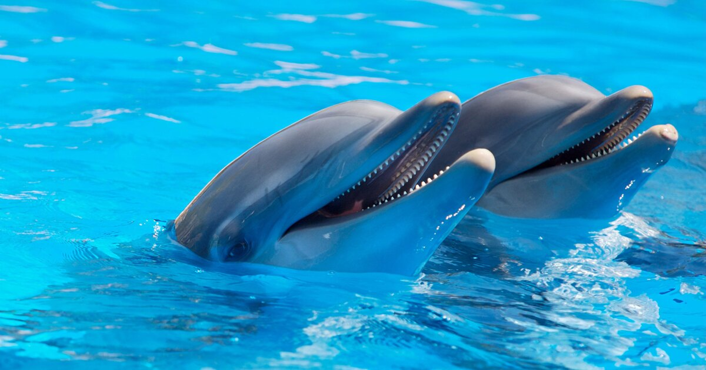
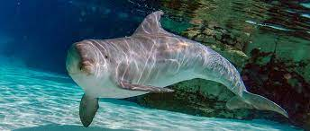
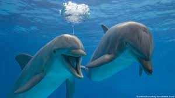

Bottlenose dolphins are aquatic animals of the genus Tursiops. These dolphins inhabit warm and temperate seas and can be found anywhere except for the Artic and Antarctic Circle regions. The bottlenose dolphin weighs an average of 300 kg (660 pounds) but can range from 150 and 650 kg (330 and 1,430 lb). The colour of its blubber varies. Some shades include dark-grey, light-grey or bluish-grey. Bottlenose dolphins communicate through burst pulsed sounds, whistles, and body language. Examples of body language include leaping out of the water, snapping jaws, slapping the tail on the surface and butting heads. Sounds and gestures help keep track of other dolphins in the group, and alert other dolphins to danger and nearby food. Bottlenose dolphins have a sharp sense of hearing. Scientists believe that the sounds travel through the dolphin's lower jaw to its inner ear and then are transmitted to the brain for analysis. They eat shrimp, squid and fish. The lifespan of a bottle-nose dolphin is at least 40 years, and females typically live 10 years more than male dolphins.
  